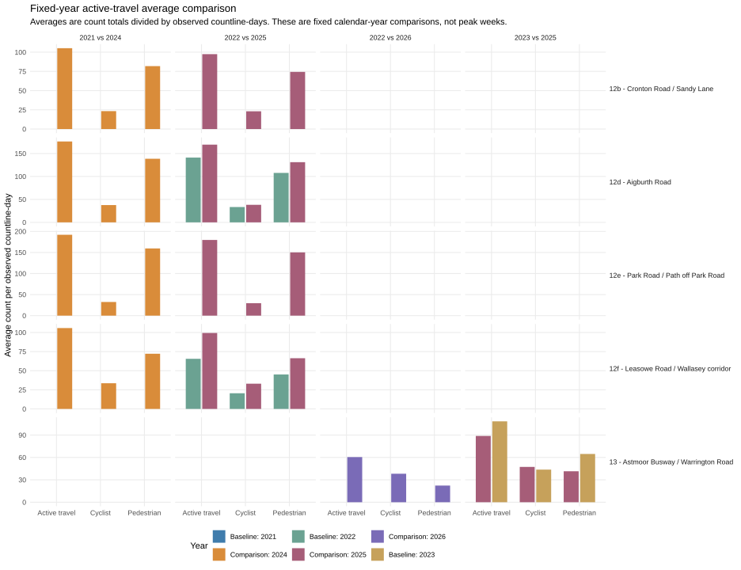

Grouped bar graph generated from vivacity_fixed_year_average_comparison.csv. This is a fixed calendar-year average comparison, not an independent peak comparison.
For schemes installed in 2023: 2021 vs 2024 and 2022 vs 2025. For the scheme installed in 2024: 2022 vs 2026 and 2023 vs 2025. 2026 is partial to the available data cut-off.

Related table: fixed-year comparison table.